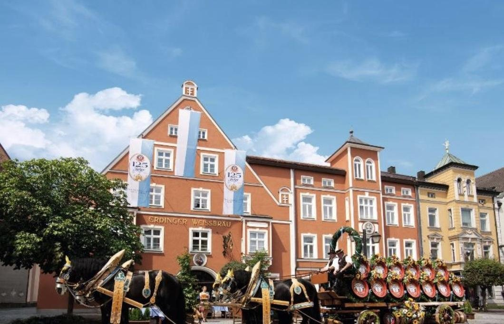

Arrive · Sat, Jun 12
Munich Airport to Erding
Fly into Munich and settle in Erding, home of the Erdinger wheat-beer brewery. Therme Erding, the largest thermal spa in the world, is a short ride away for jet-lagged legs. Evening: review the Day 1 route and check that the Grossglockner road is open.

Overnight
Hotel zum Erdinger Weißbräu
Erding, Germany